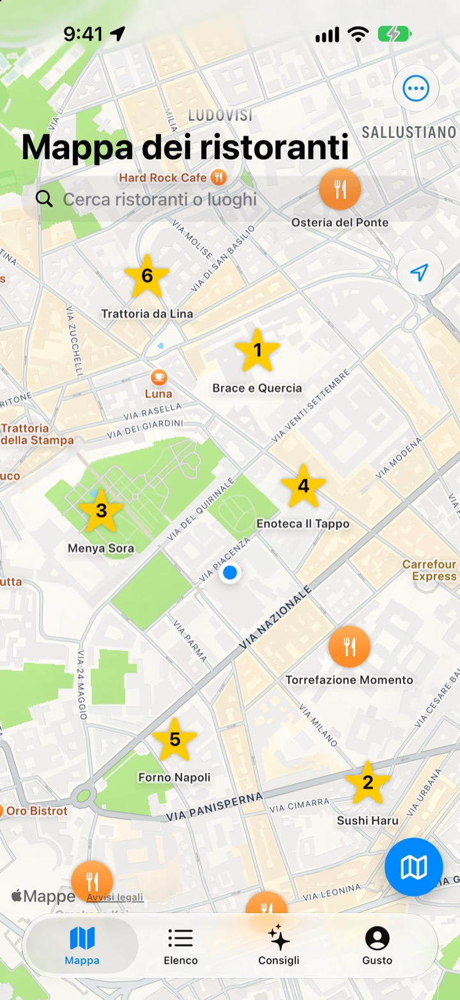
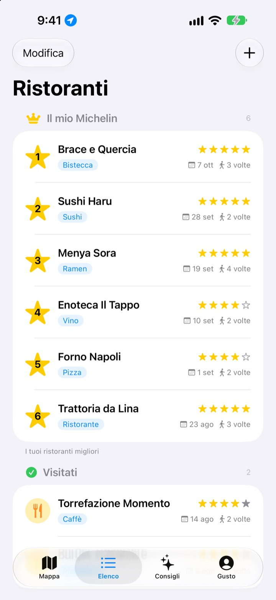
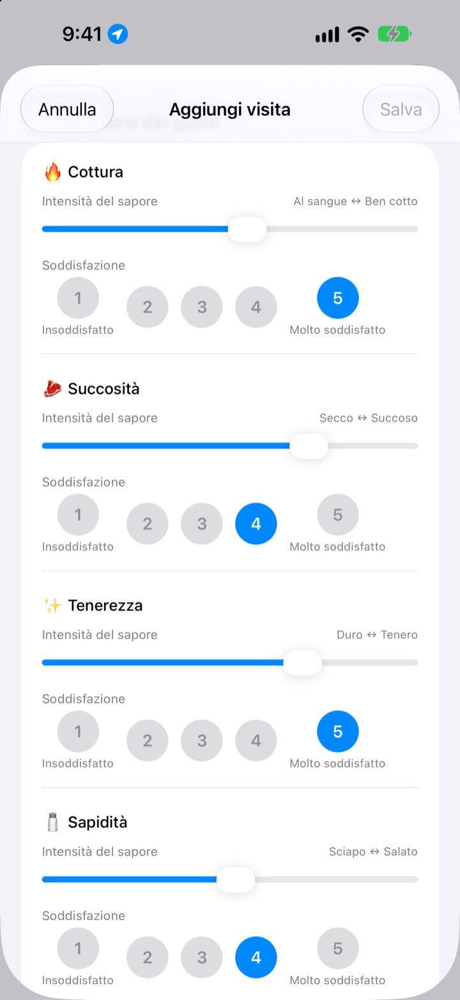
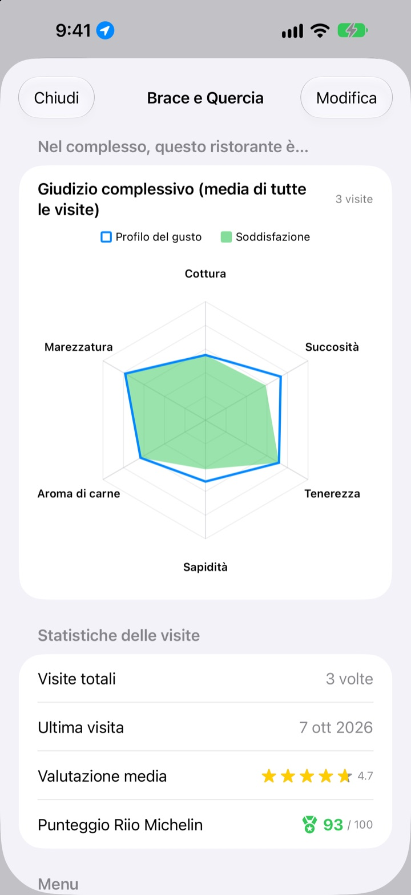

Quel posto dove hai mangiato benissimo,
non lo dimentichi più
Segna sulla mappa i ristoranti dove sei stato e quelli da provare, e a ogni visita annota cosa hai ordinato, le foto e il sapore. Quando non sai dove andare, la risposta è nei tuoi appunti.
Tutte le funzioni sono gratuite. Nessuna registrazione, tutto resta sul tuo iPhone.

Valuta un piatto
Scegli un tipo di cucina e indica quanto era intenso ogni sapore e quanto ti è piaciuto. Stessi criteri e stesso calcolo di una visita nell’app.
Si mangiava benissimo, ma cosa avevo preso?
Ricordi che il ristorante ti era piaciuto, ma il nome è sfocato, e cosa avevi ordinato o se il brodo era salato non lo ricordi proprio. Così cerchi di nuovo e leggi recensioni di sconosciuti. Insaeng tiene su una mappa ciò che hai assaggiato tu, così scegli il prossimo posto in base alla tua esperienza.
Visitati, Da provare e il tuo Michelin
Cerca sulla mappa o tocca un luogo vicino per salvarlo subito. Tieni separati i posti dove sei già stato da quelli da provare, e metti in classifica i tuoi sei preferiti dall’1 al 6.
Quando qualcuno ti chiede un consiglio, mostragli la lista.

Domande su misura per ogni piatto
L’intensità di ogni sapore, come il piccante o il sale, si regola con un cursore, mentre quanto ti è piaciuto si valuta a parte da 1 a 5. Per la bistecca contano cottura e succosità, per il sushi riso e pesce, per il ramen brodo e noodle.
Ogni visita conserva anche piatto, foto, stelle e note.

Dove tornare, in numeri
Con più visite, ogni ristorante mostra un giudizio complessivo con la media di tutte e un punteggio Riio Michelin su 100 che unisce stelle e soddisfazione.
Quando esci da un ristorante salvato, poco dopo arriva un promemoria per annotare la visita.

Si parte in tre passi
- 1
Salva un ristorante
Cercalo sulla mappa o tocca un luogo vicino.
- 2
Annota la visita
Piatto, foto, stelle e sapore. La valutazione del sapore è facoltativa.
- 3
Scegli il prossimo
Guarda la tua top 6 e i punteggi, poi vai con Mappe, Kakao Map o Naver Map.
Cosa si valuta, piatto per piatto
- 🍽️ Generale
- Piccantezza, Intensità, Dolcezza, Sapidità, Untuosità, Sapore naturale
- 🥩 Bistecca
- Cottura, Succosità, Tenerezza, Sapidità, Aroma di carne, Marezzatura
- 🍣 Sushi
- Shari (riso), Neta (pesce), Wasabi, Equilibrio, Modellatura, Temperatura
- 🍜 Ramen
- Brodo, Noodles, Chashu, Condimenti, Temperatura, Equilibrio
- 🍕 Pizza
- Impasto, Salsa, Formaggio, Cottura, Condimenti, Equilibrio
- 🍷 Vino
- Corpo, Tannini, Acidità, Aroma, Finale, Equilibrio
- ☕ Caffè
- Acidità, Corpo, Aroma, Retrogusto, Dolcezza, Equilibrio
Tutto il resto si valuta con i criteri generali della prima riga. Puoi anche creare categorie tue.
Domande frequenti
Come aggiungo un ristorante?
Scrivi il nome del ristorante nel campo di ricerca in alto sulla mappa e tocca «Aggiungi ai miei ristoranti» nei risultati. Puoi anche toccare un luogo vicino mostrato sulla mappa per aggiungerlo subito. Se un locale non compare nella ricerca, aggiungilo a mano nella tua posizione attuale o nel punto che scegli sulla mappa.
Cosa sono «Visitati», «Da provare» e la Top 6?
Visitati – I ristoranti dove sei già stato. Qui puoi annotare le visite. Da provare – I ristoranti che vuoi provare prima o poi. Dopo esserci stato, spostalo tra i Visitati dalla sua scheda dettagliata. Top 6 (Il mio Michelin) – I tuoi sei ristoranti preferiti, in classifica dal 1° al 6° posto. Un ristorante tra i «Da provare» non può entrare nella Top 6.
Devo per forza valutare il gusto?
No, è facoltativa. Se valuti, intensità del sapore e soddisfazione si aggiungono al giudizio complessivo del ristorante e contano per il punteggio Riio Michelin.
Quando arriva la notifica «Com’è andata la visita di oggi?»
Se ti fermi per più di 5 minuti vicino a un ristorante salvato e poi te ne vai, la notifica arriva circa 40 minuti dopo. Per questa funzione servono l’accesso alla posizione «Sempre» e il permesso per le notifiche. Se non vuoi ricevere queste notifiche, disattivale in Impostazioni > App > Insaeng oppure imposta la posizione su «Mentre usi l’app». Il controllo della posizione avviene solo sul dispositivo; i tuoi spostamenti non vengono né salvati né inviati all’esterno.
Posso usare l’app senza dare il permesso per la posizione?
Sì. Puoi scegliere tu un punto sulla mappa per aggiungere ristoranti e annotare le visite. Non saranno disponibili solo la visualizzazione della posizione attuale e il promemoria dopo la visita.
La ricerca dei luoghi non trova nulla
Per cercare i luoghi serve una connessione a Internet. Riprova con un altro nome o una parola chiave più breve. Se ancora non lo trovi, scegli un punto sulla mappa e aggiungilo a mano.
Dove vengono salvati i miei dati? Si sincronizzano con altri dispositivi?
Ristoranti, visite e foto vengono salvati solo su questo iPhone. La versione attuale non supporta la sincronizzazione con altri dispositivi, e anche il backup e ripristino su iCloud nelle impostazioni non funziona ancora. I dati dell’app sono invece inclusi in un backup completo dell’iPhone (backup su iCloud o sul computer).
Voglio cancellare tutto
Nelle impostazioni della schermata della mappa tocca «Elimina tutti i dati» per cancellare ristoranti e visite. L’operazione non si può annullare, quindi fai attenzione. Per eliminare anche tutte le foto senza lasciare traccia, elimina l’app.
Se elimino e reinstallo l’app, ritrovo i miei dati?
No. Poiché i dati sono salvati solo sul dispositivo, vengono cancellati insieme all’app. Tienilo presente prima di eliminarla.
È davvero tutto gratis?
Sì. Tutte le funzioni sono gratuite, senza pubblicità né account. «Sostieni lo sviluppatore» nelle impostazioni è facoltativo e non sblocca nulla.
Per i problemi che non trovano risposta qui sopra, scrivici direttamente dall’app in Impostazioni > Assistenza oppure via e-mail a mizzking75@gmail.com. Se indichi la versione dell’app, il modello di iPhone e cosa stavi facendo e in quale schermata, potremo aiutarti più in fretta.